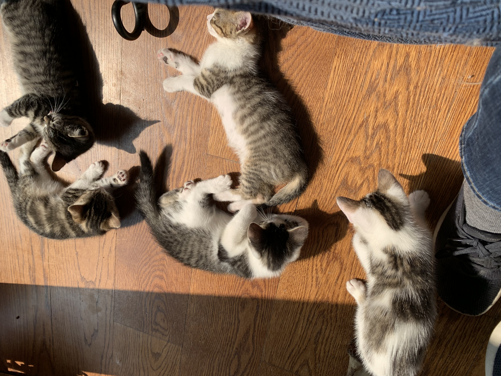
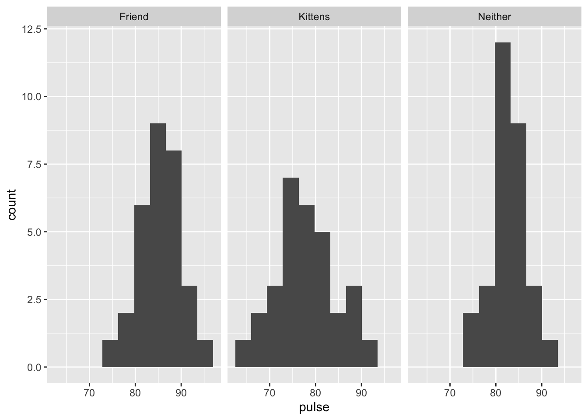
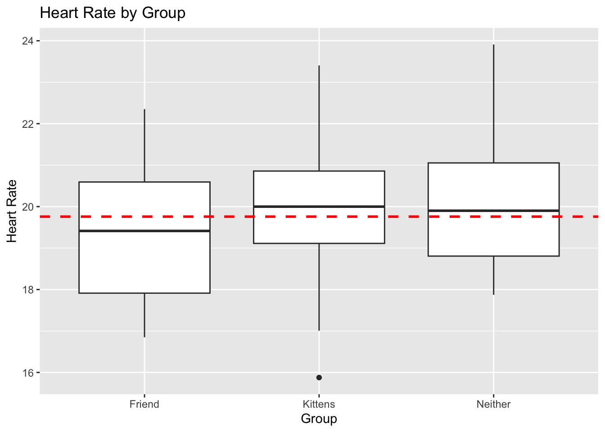

![A boxplot with three boxes titled Heart Rate by Group, where the x-axis is labelled Group with three categories: Friend, Neither, and Kittens. The y-axis is labelled Heart Rate and ranges from 72 to 97. The box above Friend goes from 82.5 to 87.5, with its mean at 85; the lines go from 79 to 91 and there are two outliers at about 91 and 74. The box above Neither goes from 80 to 86, with its mean at 82; the lines go from 74 to 93 and there are no outliers. The box above Kittens goes from 74 to 81 with its mean at 78; the lines go from 66 to 91 and there are no outliers.](lec-10-anova-props-anno_MH_files/figure-html/unnamed-chunk-1-1.png)
Lecture 10: ANOVA and Tests of Proportion
BIOS 600 - Summer Session II 2026
Announcements
HW 9 due today at 11:59 pm.
HW 10 due tomorrow at 11:59 pm.
Lab 2 assignment and tutorial have been posted and due on July 13th at 11:59 pm
Hand in Application Exercise 3 if you haven’t already!
Overview
Comparing more than two means
ANOVA test and how it relates to a t-test
Multiple comparisons issue and Inflated type I error rates
Pulse example: ANOVA
Bonferroni Correction
Very optional reading
P&G: Chapter 12, 14, 15
OI: 5.2, 5.3, 6.1, 6.2, 6.4, 7.5
Kittens

Experiment: Pets and Stress Level
For today’s topic, we will consider an experiment where heart rates were measured (as a proxy for stress level) for a group of \(n=90\) students after 10 minutes of being under certain conditions.
The 3 Conditions/Groups: Of the 90 total students, 30 students spent time holding kittens, 30 students sat alone, and 30 students chatted with a friend.
After 10 minutes, each student’s heart rate was measured.
Research Question: Is there a group (kittens, friend, alone/neither) associated with lower heart rate compared to the others?
Let’s take a look at the data on the next slide.
Distribution of heart rate data
How do we compare across three groups? Which groups are different?
Example: pets and stress
We are interested in testing
\[H_0: \mu_K = \mu_F = \mu_N\]
against the alternative that at least one mean is different from the others.
One way to do this would be to use t-tests on all possible pairs of tests (here there are just three - how many pairs of tests would this be?). However, if we have more groups, this becomes quite complicated.
For example, with 10 groups we need to do \(10\choose {2}\) = 45 tests!
Review: Error rates
Tip
In groups, fill in the blanks:
- Suppose we test the null hypothesis \(H_0\):\(\mu = \mu_0\). We could potentially make two types of errors:
| Truth | \(\mu = \mu_0\) | \(\mu \neq \mu_0\) |
|---|---|---|
| Fail to reject \(H_0\) | correct decision | ____________ |
| Reject \(H_0\) | ___________ | correct decision |
How would you explain the following in words?
- Type I Error: ____________
- Type II Error: ____________
Multiple comparisons
Now that we’ve reviewed Type I and Type II errors, we need to discuss multiple comparisons - an important concept in statistics.
Back to our pet example. What if we had 10 groups?
In addition to being time-consuming, carrying out multiple tests can lead to inflated Type I error rates which puts into question the validity of a given study if these multiple comparisons are not accounted for.
Multiple comparisons in action: overall test
![A cartoon strip with three panels. The first panel shows a stick figure with a ponytail running in saying Jelly Beans cause acne! and another stick figure saying Scientists! Investigate! A speech bubble from someone not visible says But we're playing minecraft ... fine. The second panel shows two stick figures, one with lab goggles and the other holding a piece of paper, saying We found no link between jelly beans and acne (p > 0.05). The third panel has the two stick figures from the first panel. The one without a ponytail says That settles that; the one with a ponytail says I hear it's only a certain color that causes it. The other goes Scientists! The speech bubble from someone not in the panel says But Minecraft!](images/lec-12/multiple.png)
Extra tests…whoa!
![A cartoon with 20 panels, all of which have two stick figures, one with lab goggles and the other holding a piece of paper. In the first 13 panels, the stick figures are saying they did not find a link between a variety of color jelly beans and acne. In the fourteenth panel, they say they found a link between green jelly beans and acne and a speech bubble from someone not in the panel says Whoa! In the fifteenth through twentieth panels, they say they did not find a link between a variety of color jelly beans and acne.](images/lec-12/multiple2.png)
Green jelly beans!

So what went wrong?

Multiple comparisons
Consider our pets / stress example, where we had three pairwise comparisons.
- Suppose all means are truly equal and we conduct all three pairwise tests
\(H_0\): \(\mu_K = \mu_F\) vs. \(H_A\): \(\mu_K \neq \mu_F\)
\(H_0\): \(\mu_K = \mu_N\) vs. \(H_A\): \(\mu_K \neq \mu_N\)
\(H_0\): \(\mu_N = \mu_F\) vs. \(H_A\): \(\mu_N \neq \mu_F\)
Suppose also the tests are independent and done at a 0.05 significance level
Then the probability we fail to reject all three tests if the null hypothesis were true (i.e. the correct decision), assuming the tests are independent, is:
\(P(\text{fail to reject Test 1} | H_0 \text{ true})\cdot P(\text{fail to reject Test 2} | H_0 \text{ true}) \cdot P(\text{fail to reject Test 3} | H_0 \text{ true})\)
Multiple comparisons (continued)
Assuming the tests are independent, this probability is \((1−0.05)^3=0.95^3=0.857\) , and so the probability of rejecting at least one of the three null hypotheses, called the family-wise error rate, is \(1−0.857=0.143>0.05\)
If we had 10 groups instead, we would need 45 pairwise tests. With 45 tests, the probability of rejecting at least 1 of them (incorrectly!) is over 90%!
Intuitive Takeaway: Why Multiple Comparisons Matter
Each hypothesis test carries a small chance (e.g., 5%) of being a false positive.
- Like flipping a coin: occasionally, you’ll get “heads” just by chance.
When we run many tests, those small chances add up.
- With only 3 tests, there’s already a 14% chance of at least one false alarm. With 45 tests, that chance exceeds 90%!
In practice: Even if nothing real is going on, we’re almost guaranteed to find something “statistically significant.” This can lead to misleading conclusions — especially in large studies testing many variables.
Takeaway: The more tests we do, the more we must adjust for multiple comparisons (e.g., Bonferroni correction, FDR (false discovery) control) to avoid fooling ourselves.
Multiple comparisons
ANOVA extends the t-test and is one way to control the overall Type I error rate at a fixed level \(\alpha\), if we only test pairwise differences when the overall ANOVA test is rejected
ANOVA stands for analysis of variance. We use ANOVA when we want to compare more than two groups.
ANOVA null hypothesis
In ANOVA, we typically follow this testing procedure:
First, we conduct an overall test of the null hypothesis that the means of all of the groups are equal.
If this is rejected, then we step down to see which means are different from each other. A multiple comparisons correction is sometimes used for these pairwise comparisons of means.
If we fail to reject the null hypothesis, then no further testing should be done.
ANOVA alternative hypothesis
For ANOVA with three groups, our null hypothesis is \(H_0: \mu_K = \mu_F = \mu_N\). What could happen under the alternative?
\(\mu_K≠μ_F≠μ_N\)
\(\mu_K=μ_F\), but \(μ_N\) is different
\(\mu_K=μ_N\), but \(μ_F\) is different
\(μ_F=μ_N\), but \(\mu_K\) is different
The alternative hypothesis for ANOVA is that at least one of the means is different from the others.
Assumptions of ANOVA
Outcomes within groups are normally distributed
Homoscedastic variance (the within-group variance is the same for all groups)
Samples are independent
If these assumptions are violated, then results from ANOVA may not be valid. We will discuss some alternatives later in the course.
Validity of ANOVA for pet data
pulse_data |>
ggplot(mapping = aes(x = pulse)) +
geom_histogram(bins=10) +
facet_wrap(~group) +
labs(
x="Heart Rate",
y="Count",
title="Heart Rate by Group"
)Validity of ANOVA for pet data
ggplot(pulse_data, aes(x = pulse)) +
geom_histogram(bins = 10) +
facet_wrap(~group)Validity of ANOVA for pet data

Variances appear to be similar, but normality may be slightly questionable. For now, let’s proceed despite this.
Why analyze variance when we want means?
Remember, ANOVA stands for analysis of variance.
What does variance have to do with our null hypothesis, which is about equality of means (say, \(H_0:μ_1=μ_2=⋯=μ_K\))?
Why analyze variance when we want means?
F-test: If the group-specific means vary around the overall grand mean more than the individual observations vary around their group-specific sample means, then we have evidence that the corresponding population means are in fact different.
F-test
How do we formally compare these variances? Consider the F statistic given by
\[F = \frac{s^2_{between}}{s^2_{within}}\]
which if \(H_0\) is true, has an F distribution with K−1 numerator degrees of freedom and \(n−K\) denominator degrees of freedom, where K is the number of groups and \(n\) is the total number of observations.
Components of the F Statistic
Between-group variance - \(s^2_{between}\)
- Measures how much the group means differ from the grand mean
- Captures variation between the groups
Within-group variance - \(s^2_{within}\)
- Measures how much individual observations vary around their group mean
- Captures variation within the groups
ANOVA asks: Is the variation between groups larger than the variation within groups?
F-test for pet data
![A boxplot with three boxes titled Heart Rate by Group, where the x-axis is labelled Group with three categories: Friend, Neither, and Kittens. The y-axis is labelled Heart Rate and ranges from 72 to 97. The box above Friend goes from 82.5 to 87.5, with its mean at 85; the lines go from 79 to 91 and there are two outliers at about 91 and 74. The box above Neither goes from 80 to 86, with its mean at 82; the lines go from 74 to 93 and there are no outliers. THe box above Kittens goes from 74 to 81 with its mean at 78; the lines go from 66 to 91 and there are no outliers. There is a red dashed line at y=82.](lec-10-anova-props-anno_MH_files/figure-html/unnamed-chunk-5-1.png)
Different Example Data
![A boxplot with three boxes titled Heart Rate by Group, where the x-axis is labelled Group with three categories: Friend, Neither, and Kittens. The y-axis is labelled Heart Rate and ranges from 16 to 24. The box above Friend goes from 18 to 21, with its mean at 19.5; the lines go from 17 to 22 and there are two no outliers. The box above Neither goes from 19 to 21, with its mean at 20; the lines go from 18 to 24 and there are no outliers. The box above Kittens goes from 19 to 21 with its mean at 20; the lines go from 17 to 23 and there is an outlier at 16. There is a red dashed line at y=19.5.](lec-10-anova-props-anno_MH_files/figure-html/unnamed-chunk-6-1.png)
Visualization of F Distributions
![A plot with three probability density functions. One is dark red and labelled numerator degrees of freedom 2, denominator degrees of freedom 87 and looks like a half of a concave-up parabola; one is labelled numerator degrees of freedom 3, denominator degrees of freedom 86 and looks like a right-skewed distribution with a vertical ascent on the left; and one is labelled numerator degrees of freedom 9, denominator degrees of freedom 80 and looks like a right-skewed distribution with a more gradual ascent on the left that the previous one.](lec-10-anova-props-anno_MH_files/figure-html/unnamed-chunk-7-1.png)
F-test
The F-test for ANOVA is inherently one-tailed, rejecting \(H_0\) only if F is considerably larger than one.
Importantly, this does not mean we have a one-sided alternative; we just look at one tail of the F distribution to get the p-value.
If there are only two groups, then the F-test gives the same result as the independent-samples t-test.
Output
# anova in R:
summary(aov(pulse ~ group, data = pulse_data)) Df Sum Sq Mean Sq F value Pr(>F)
group 2 877.7 438.8 15.77 1.44e-06 ***
Residuals 87 2421.7 27.8
---
Signif. codes: 0 '***' 0.001 '**' 0.01 '*' 0.05 '.' 0.1 ' ' 1Which rows correspond to the between-group and within-group variances here, respectively?
Output
F-test for pet data
Note that \(F = s^2_B / s^2_W = \frac{(877.7/2)}{(2421.7/87)} = 15.77\), with ndf = \(3-1 = 2\) and ddf \(90-3=87\).
This corresponds to a p-value <.0001.
Conclusion: At \(\alpha = 0.05\), we reject the null hypothesis. There is sufficient evidence that at least one of the three groups comes from a population with a different mean than the others.
Which groups might be different?
F-test for pet data
![A boxplot with three boxes titled Heart Rate by Group, where the x-axis is labelled Group with three categories: Friend, Neither, and Kittens. The y-axis is labelled Heart Rate and ranges from 72 to 97. The box above Friend goes from 82.5 to 87.5, with its mean at 85; the lines go from 79 to 91 and there are two outliers at about 91 and 74. The box above Neither goes from 80 to 86, with its mean at 82; the lines go from 74 to 93 and there are no outliers. THe box above Kittens goes from 74 to 81 with its mean at 78; the lines go from 66 to 91 and there are no outliers. There is a red dashed line at y=82.](lec-10-anova-props-anno_MH_files/figure-html/unnamed-chunk-9-1.png)
Different Example Data

anova_model <- aov(pulse ~ group, data = pulse_data_v2)
summary(anova_model) Df Sum Sq Mean Sq F value Pr(>F)
group 2 7.29 3.643 1.322 0.273
Residuals 72 198.42 2.756 Application Exercise
On Canvas, download today’s Application Exercise template (Application exercise 4).
Work in groups of 2 or 3 to practice using ANOVA tests in R.
Bonferroni correction
As we showed earlier, conducting multiple tests on a data set increases the family-wise error rate - the probability of making at least one Type I error (false positive) when performing multiple, simultaneous hypothesis tests
One very conservative way to ensure this is not the case is to simply divide \(\alpha\) by the number of tests to be done and to use that as the significance level.
This procedure is called the Bonferroni correction.
Bonferroni correction
For example: for two tests, to preserve an overall 0.05 type I error rate, the Bonferroni correction would use \(\alpha/2=0.025\) as the significance level for each individual test instead of 0.05.
Bonferroni is a conservative correction, making it harder to reject the null hypothesis, but it is a safe bet in controlling the Type I error rate.
Pets and stress: group differences
We can compare the groups using a Bonferroni correction (here we have three tests, so the significance level for each test is \(\alpha/3\)).
The raw (uncorrected) p-values for the t-test comparing friend vs. pet was \(<0.0001\); for friend vs. neither was 0.021, and for pet vs. neither was 0.009.
In your small groups: What might we conclude?
What if the outcome is categorical?
So far, we’ve focused on comparing means of continuous outcomes between groups
Examples: mean heart rate, mean BMI
But sometimes the outcome we want to compare is categorical (yes/no or categories)
Examples: smoker vs. non-smoker, disease vs. no disease
Instead of comparing means, we compare proportions (or counts) across groups.
TipThink
Does the distribution of categories differ across groups?
Example association questions
Is the # of cigarettes smoked a day associated with lung cancer?
Is smoking status associated with lung cancer?
Is hrs of exercise per week associated with heart disease?
Is exercise category (low / moderate / high) associated with heart disease?
Motivation: Comparisons of Interest
| Predictor Type | Outcome Type | Common Tests / Topics |
|---|---|---|
| Categorical | Categorical | Fisher’s exact test, \(\chi^2\) test |
| Categorical | Continuous | t-tests, ANOVA |
Note
Same big question, different summary:
- Continuous outcome → compare means
- Categorical outcome → compare proportions (or counts)
Pneumococcal disease
The World Health Organization estimates that in developing countries 814,000 children under the age of five die annually from invasive pneumococcal disease (IPD), with an estimated 1.6 million deaths affecting all ages globally.
Several recent studies have identified associations between pneumococcal serotypes (species variations) and patient outcomes from IPD. We consider data from a study of pneumococcal serotypes and mortality (Inverarity et al. (2011)).
Pneumococcal disease
| Serotype | Alive | Dead | Total |
|---|---|---|---|
| Serotype 10 | 37 | 7 | 44 |
| Serotype 31 | 24 | 10 | 34 |
| Total | 61 | 17 | 78 |
Is there an association between serotype and mortality?
Chi-square tests
\(H_0\): There is no association between serotype and mortality
\(H_1\): There is an association between serotype and mortality
Under \(H_0\), we have independence between serotype and mortality, implying that joint probabilities should be equal to products of marginal distributions:
| Serotype | Alive | Dead | Total |
|---|---|---|---|
| Serotype 10 | ? | ? | 44 |
| Serotype 31 | ? | ? | 34 |
| Total | 61 | 17 | 78 |
What counts might we expect under \(H_0\)?
Intuition: Joint and Marginal Probabilities
Suppose we look at two variables: Serotype and Mortality (Alive or Dead).
The joint probability describes the probability of being in both categories (e.g., “Serotype 10 and Alive”).
The marginal probabilities describe totals across one variable:
- P(Serotype 10) = proportion of all patients with Serotype 10
- P(Alive) = proportion of all patients who survived
- P(Serotype 10) = proportion of all patients with Serotype 10
Marginal totals
| Serotype | Total |
|---|---|
| 10 | 44 |
| 31 | 34 |
| Total | 78 |
Marginal totals
| Outcome | Total |
|---|---|
| Alive | 61 |
| Dead | 17 |
| Total | 78 |
What would happen if these two variables were independent?
- Under the null hypothesis of independence, the chance of being both “Serotype 10” and “Alive” should just be:
\[ P(\text{Serotype 10 and Alive}) = P(\text{Serotype 10}) \times P(\text{Alive}) \]
- We can multiply these probabilities by the total number of observations to find the expected counts.
What would happen if these two variables were independent?
For example:
\[ E_{10,Alive} = P(\text{Serotype 10}) \times P(\text{Alive}) \times N \]
- Using our totals:
\[ P(\text{Serotype 10}) = \frac{44}{78}, \quad P(\text{Alive}) = \frac{61}{78}, \quad N = 78 \]
Compute expected count under independence
# Compute expected count under independence
expected_10_alive <- (44/78) * (61/78) * 78
expected_10_alive[1] 34.41026We can repeat this for each cell to find what we’d expect if serotype and mortality were truly unrelated.
The chi-square test then measures how far our observed counts deviate from these expected counts.
\[\chi^2 = \sum\frac{(O-E)^2}{E}\]
Intuition
If observed counts are close to what we’d expect under independence, \(\chi^2\) will be small, then we’d fail to reject \(H_0\).
If they’re far from expected, \(\chi^2\) will be large, which might lead to evidence of an association.
Visualizing Observed vs Expected Counts
Let’s visualize how the observed counts compare to the expected counts under independence.
![A figure with two panels, titled Observed vs Expected Counts by Serotype. The y-axis is labelled Count and the x-axis for each panel is labeled Outcome with options Alive and Dead. In the left panel, the subtitle is Serotype 10; above Alive there is a red bar with count 34 and a blue bar with count 37 and above Dead there is a red bar with count 9 and a blue bar with count 7. In the right panel, the subtitle is Serotype 31; above Alive there is a red bar with count 26 and a blue bar with count 24 and above Dead there is a red bar with count 7 and a blue bar with count 10.](lec-10-anova-props-anno_MH_files/figure-html/unnamed-chunk-15-1.png)
Chi-square tests
The chi-square test compares the observed frequencies in each cell to the expected count under \(H_0\); if the total differences are large enough, we reject \(H_0\):
\[\chi^2 = \sum_{i=1}^{r \times c}\frac{(O_i - E_i)^2}{E_i}\]
which has a \(\chi^2_{(r - 1) \times (c-1)}\) distribution, with \(r\) = Number of rows, \(c\) = number of columns, under \(H_0\).
General rules of thumb for when you can use the chi-square test are >5 or >10 observations in each cell.
Visualization of Chi-Square Distributions
![A plot with three probability density functions. One is dark red and labelled numerator degrees of freedom 2, denominator degrees of freedom 87 and looks like a half of a concave-up parabola; one is labelled numerator degrees of freedom 3, denominator degrees of freedom 86 and looks like a right-skewed distribution with a vertical ascent on the left; and one is labelled numerator degrees of freedom 9, denominator degrees of freedom 80 and looks like a right-skewed distribution with a more gradual ascent on the left that the previous one.](lec-10-anova-props-anno_MH_files/figure-html/unnamed-chunk-16-1.png)
Chi-square tests
Expected counts:
[,1] [,2]
[1,] 34.41026 9.589744
[2,] 26.58974 7.410256data <- matrix(c(37, 7, 24, 10),
byrow = T, nrow = 2)
data [,1] [,2]
[1,] 37 7
[2,] 24 10chisq.test(data)
Pearson's Chi-squared test with Yates' continuity correction
data: data
X-squared = 1.3359, df = 1, p-value = 0.2478What might we conclude at \(\alpha = .05\)?
Conclusion
- Conclusion: Since the p-value is greater than 0.05, we fail to reject the null hypothesis. There is not enough evidence to conclude that survival differs between Serotype 10 and Serotype 31.
An equivalent hypothesis
Under \(H_{0}\) There is no association between serotype and mortality, we have independence between serotype and mortality.
If two variables are independent:
\[P(A|B) = P(A)\]
Under \(H_{0}\), serotype and death are independent which means:
\[P(\text{death}|S_{10}) = P(\text{death}|S_{31}) = P(\text{death})\]
Pneumococcal disease
| Serotype | Alive | Dead | Total |
|---|---|---|---|
| Serotype 10 | 37 | 7 | 44 |
| Serotype 31 | 24 | 10 | 34 |
| Total | 61 | 17 | 78 |
Is the proportion who die different between serotypes?
- \(P(\text{death}|S_{10}) = 7/44 = 0.16\)
- \(P(\text{death}|S_{31}) = 10/34 = 0.29\)
Overview
ANOVA testing
Bonferroni correction
Chi-square test and example
Next Class
Fisher’s Exact Test
Non-Parametric Methods